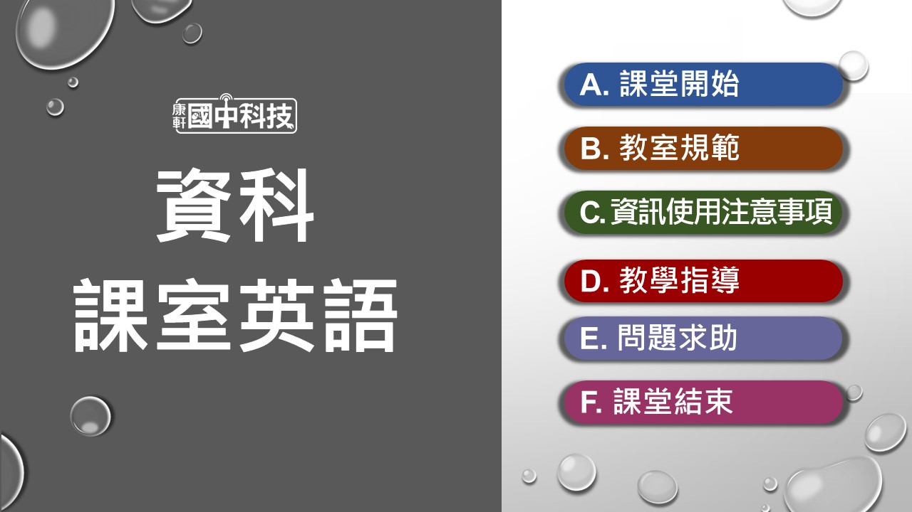

《快速連結》
教學檔案下載
影片資源清單
線上測驗連結
雙語教學資源
《六冊補充資源》
補充教案
學習單

《快速連結》
《六冊補充資源》
◤電子書、PPT
[連結] 康軒數位高手 ◤全冊打包下載
[下載] 學生版全冊素材 [下載] 教師版全冊素材
◤各章檔案（教師版）
【第 1 章 多媒體專題－畢經之路】
[下載] 全章剪輯、示範素材
【第 3 章 進階資料處理】[下載] 3-1 資料整理與整合 [連結] 數位教具：凱薩密碼 [下載] 第 3 章實作活動 [連結] 第 3 章實作活動：線上範例
【Python初探】[下載] Colab筆記本專案檔 ◤課外補充
【第 1 章 多媒體專題——畢經之路】
[下載] 自動添加影片字幕 [連結] 威力導演剪輯教學
學習瞭望臺
【P.5】 職業介紹 網路工程師實務應用職類 (05:52)
【P.5】 結訓前就有工作！ 雲端網管班超夯 (02:42)【第 1 章 多媒體專題——畢經之路】
【P.7】 5部最早出現的YouTube影片 (04:10)
【P.7】 啾啾鞋-YouTube影片製作流程大公開 (07:06)1-1 影片基礎剪輯
【P.8】 高中畢業影片 「境中境」手機跳躍 (01:27)
科技廣角——動畫
【P.32】 精采手翻書欣賞 (04:45)
【P.32】 動態捕捉：阿凡達電影是怎麼拍的？ (01:08)
【P.32】 定格動畫家，讓模型動起來 (03:00)
【P.32】 17歲定格動畫師 (03:00)
【P.32】 劇情逗趣又療癒「天竺鼠車車」暴紅 (01:39)【第 2 章 網路世界】
2-1 認識網路
【P.36】 網路發展歷程 (03:40)
【P.39】 Wi-Fi AP與無線路由器 (02:44)
【P.40】 為什麼網路速度買很快，但用起來卻還是卡卡的 (04:30)
【P.44】 LAN、WAN不要再插錯洞了 (03:56)
【P.46】 認識網域名稱、註冊購買(含部分業配內容) (02:59)
【P.50】 BBS鄉民的正義 前導概念片 (05:50)
【P.51】 萬物究竟要怎麼變得有智慧 (07:48)2-2 無線網路技術
【P.54】 藍牙的故事、工作原理 (10:00)
【P.56】 Wi-Fi訊號如何穿牆(簡體字) (02:56)
【P.57】 Wi-Fi選購注意事項 (09:00)
【P.57】 如何挑選適合自己的Wi-Fi分享器 (11:02)
【P.57】 升級到500M的網速，為何還會卡頓 (08:06) 【P.58】 什麼是5G (02:00)
【P.59】 利用5G守護銀髮族的健康 (01:08)
【P.59】 5G創新應用 (08:16)科技廣角——結帳時的資訊科技
【P.62】 QR code的歷史 (07:24)
【P.63】 零售店黑科技！衣服丟購物籃「1秒」辨識結帳 (02:26)
【P.63】 手機沒有NFC就是失敗？ (02:44)【第 3 章 進階資料處理】
3-1 資料整理與整合
【P.72】 國文模擬考統計（示範試算表）（非影片）
（若須複製使用，請點選檔案／建立副本）3-2 資料轉換
【P.86】 政府資料開放平臺（非影片）
【P.87】 凱撒密碼的由來、介紹 (05:47)
【P.87】 數位教具：凱薩密碼
【P.88】 經典密碼如何害死瑪麗女王 (03:06)
【P.89】 https、非對稱加密(簡體字) (04:04)
【P.91】 WaveNet文字轉語音技術 (06:00)
【P.91】 Sound Of Text網站（非影片）科技廣角——資料壓縮
【P.93】 7-zip網站（非影片）
附錄－邁向高中資訊科技：Python初探
【P.96】 10個在Google Colab學習Python的原因 (05:51)
【課室英語教學網】
[連結] 課室英語教學網

【雙語教學投影片】
[連結] 課室雙語、課程內容雙語PPT

.jpg)